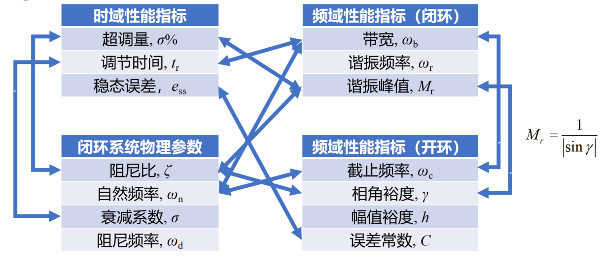
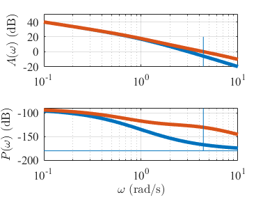

5.4 控制系统校正
本章主要介绍控制系统校正的基本原理和方法，重点讲解频域指标与时域指标的关系、校正环节的分类、串联超前校正和串联滞后校正等核心内容。控制系统校正是改善系统性能、满足设计要求的重要手段。
本章学习目标
- 理解控制系统校正的基本概念和目的
- 掌握频域指标与时域指标的对应关系
- 了解校正环节的分类和特点
- 掌握串联超前校正的设计方法
- 掌握串联滞后校正的设计方法
- 能够根据性能要求设计合适的校正装置
- 理解不同校正方法的应用场景和优缺点
章节内容概述
5.4.1 控制系统校正概述
5.4.2 频域指标与时域指标的关系
5.4.3 校正环节的分类
5.4.4 串联超前校正
5.4.5 串联滞后校正
5.4.6 实践练习与小结
笔记说明：本笔记基于PPT内容整理，补充了必要的公式推导和解释说明，确保内容完整性。
5.4.1 控制系统校正概述
控制系统校正的目的
控制系统校正的目的是通过引入适当的校正装置，改善系统的性能指标，使其满足设计要求。主要改善的方面包括：
- 稳定性：提高系统的稳定裕度
- 快速性：改善系统的响应速度
- 准确性：减小稳态误差
- 鲁棒性：增强系统对参数变化的适应性
校正的基本思想
通过改变系统的频率特性（幅频特性和相频特性），使系统满足性能指标要求。校正装置可以改变系统的零极点分布，从而改变系统的动态性能。
5.4.2 频域指标与时域指标的关系
二阶系统的性能指标
对于典型的二阶系统，时域性能指标与频域性能指标之间存在确定的对应关系。
时域性能指标
- 调节时间 ：系统响应达到并保持在稳态值允许误差范围内所需的时间
- 上升时间 ：响应从稳态值的10%上升到90%所需的时间
- 超调量 ：响应最大峰值与稳态值的相对误差
- 峰值时间 ：响应达到第一个峰值所需的时间
二阶系统的物理特性
- 自然频率 ：无阻尼振荡频率
- 阻尼比 ：衰减与振荡的比值
- 阻尼频率 ：阻尼振荡频率，
- 衰减系数 ：特征根实部绝对值，
频域性能指标
闭环系统频域指标
- 带宽 ：闭环系统幅频特性下降3 dB时所对应的频率
- 谐振频率 ：闭环幅频特性出现峰值时的频率
- 谐振峰值 ：闭环幅频特性的最大值
开环系统频域指标
- 截止频率 ：开环幅频特性为1（0 dB）时的频率
- 相角裕度 ：
- 幅值裕度 ：，其中
- 误差常数 ：位置、速度、加速度误差常数
指标对应关系
二阶系统的近似关系
对于单位负反馈的典型二阶系统：
闭环传递函数：
重要关系：
-
相角裕度与阻尼比：
或更精确地：
-
截止频率与自然频率：
-
带宽与自然频率：
-
谐振峰值与阻尼比：
工程经验
- 闭环系统阻尼比：通常选择
- 开环系统相角裕度：对应
- 带宽：反映了系统的快速性，与调节时间对应

指标小结| 时域性能指标 | 闭环系统物理参数 | 频域性能指标（闭环） | 频域性能指标（开环） |
|---|---|---|---|
| 超调量 | 阻尼比 | 带宽 | 截止频率 |
| 调节时间 | 自然频率 | 谐振频率 | 相角裕度 |
| 上升时间 | 衰减系数 | 谐振峰值 | 幅值裕度 |
| 稳态误差 | 阻尼频率 | 误差常数 |
5.4.3 校正环节的分类
按连接方式分类
根据校正装置在系统中的连接方式，可以分为：
1. 串联校正
校正装置串联在前向通道中，结构简单，应用广泛。
2. 反馈校正
校正装置构成局部节的特性。
3. 前馈校正
- 前置滤波校正：在参考输入前加入校正装置
- 扰动补偿前置校正：对扰动进行测量和补偿
4. 复合校正
结合多种校正方式，综合改善系统性能。
按校正装置特性分类
1. 超前校正环节
传递函数形式：
或
特点：
- 极点在零点右边
- 提供相位超前
- 最大超前角仅与有关：
- 最大超前角频率：
2. 滞后校正环节
传递函数形式：
或
特点：
- 零点在极点右边
- 提供幅值衰减
- 最大滞后角仅与有关：
- 最大滞后角频率：
3. 超前-滞后校正环节
结合超前和滞后校正的优点，传递函数形式：
4. PID校正环节
- 比例（P）：改善响应速度，减小稳态误差
- 积分（I）：消除稳态误差，提高系统型别
- 微分（D）：提高稳定性，减小超调
5.4.4 串联超前校正
超前校正的作用
串联超前校正主要利用其高频相角超前特性：
- 提高相角裕度：增加系统的稳定性
- 提高截止频率：改善系统的快速性
- 对稳态性能影响小：不改变系统的型别和误差常数
超前校正的设计步骤
Step 1：根据稳态误差要求设计开环增益
根据稳态误差要求确定系统的型别和误差常数，计算所需的开环增益。
Step 2：检验当前系统的相角裕度
绘制未校正系统的伯德图，计算当前的相角裕度和截止频率。
Step 3：根据截止频率要求设计超前环节参数
-
确定需要的相位超前量：
其中为安全裕量。
-
计算参数：
-
确定最大超前角频率：
选择（期望的截止频率） -
计算时间常数：
-
确定校正装置：
Step 4：验证校正后系统的性能
绘制校正后系统的伯德图，验证相角裕度、截止频率和幅值裕度是否满足要求。
设计实例
问题：已知单位负反馈系统的开环传递函数为：
要求：
- 速度跟踪误差小于10%
- 开环截止频率大于4.4 rad/s
- 相角裕度大于45°
- 幅值裕度大于10 dB
试设计串联超前校正装置。
解答：
-
Step 1：设计开环增益
- 速度误差常数：
- 速度跟踪误差：
- 解得：，取
-
Step 2：检验当前系统性能
- 未校正系统：
- 截止频率： rad/s
- 相角裕度：
- 均低于指标要求，需要超前校正
-
Step 3：设计超前环节
- 需要相位超前量：
- 计算：
- 选择 rad/s
- 计算： s
- 超前校正装置：
-
Step 4：验证校正后性能
- 校正后系统：
- 验证满足所有性能要求

5.4.5 串联滞后校正
滞后校正的作用
串联滞后校正主要利用其高频幅值衰减特性：
- 提高相角裕度：通过降低截止频率，使系统在较低频率处穿越0 dB线
- 改善稳态性能：可以通过提高增益来改善稳态误差，而不影响稳定性
- 对高频噪声有抑制作用
滞后校正的设计步骤
Step 1：根据稳态误差要求设计开差要求确定所需的开环增益，通常需要比未校正系统更高的增益。
Step 2：检验当前系统的性能指标
绘制未校正系统（带有所需增益）的伯德图，计算当前的相角裕度、截止频率和幅值裕度。
Step 3：根据相角裕度要求设计滞后环节参数
-
确定新的截止频率：
在未校正系统的相频特性上，找到相位等于的频率，其中为补偿滞后环节引入的相位滞后。 -
确定需要的幅值衰减量：
在频率处，未校正系统的幅值为，需要衰减到0 dB，即： -
计算参数：
-
选择零点频率：
选择零点频率远低于新的截止频率，通常： -
计算时间常数：
-
确定校正装置：
Step 4：验证校正后系统的性能
绘制校正后系统的伯德图，验证相角裕度、截止频率和幅值裕度是否满足要求。
设计实例
问题：已知单位负反馈系统的开环传递函数为：
要求：
- 静态速度误差常数 s⁻¹
- 相角裕度不低于40°
- 幅值裕度不小于10 dB
- 截止频率不小于2.3 rad/s
试设计串联滞后校正装置。
解答：
-
Step 1：设计开环增益
-
速度误差常数：
-
解得：
-
相角裕度：（系统不稳定）
-
幅值裕度：（负值）
-
系统不稳定，需要滞后校正
-
-
Step 3：设计滞后环节
- 期望相角裕度：
- 考虑滞后环节引入的相位滞后：取
- 需要未校正系统在处的相位：
- 在未校正系统相频特性上找到对应的频率： rad/s
- 在 rad/s处，未校正系统的幅值： dB
- 需要衰减量： dB
- 计算：
- 选择零点频率： rad/s
- 计算： s
- 滞后校正装置：
-
Step 4：验证校正后性能
- 校正后系统：
- 截止频率： rad/s > 2.3 rad/s，满足要求
- 相角裕度：，满足要求
- 幅值裕度： dB > 10 dB，满足要求
- 速度误差常数： s⁻¹，满足要求
超前校正与滞后校正的比较
| 比较项目 | 超前校正 | 滞后校正 |
|---|---|---|
| 主要作用 | 提高相角裕度，提高截止频率 | 提高相角裕度，改善稳态性能 |
| 对快速性的影响 | 提高截止频率，改善快速性 | 降低截止频率，可能降低快速性 |
| 对稳定性的影响 | 提高相角裕度，改善稳定性 | 提高相角裕度，改善稳定性 |
| 对稳态性能的影响 | 影响小，不改变系统型别 | 可通过提高增益改善稳态误差 |
| 对高频噪声的影响 | 放大高频噪声 | 抑制高频噪声 |
| 适用场景 | 相角裕度不足，需要提高快速性 | 相角裕度不足，需要改善稳态性能 |
| 设计复杂度 | 相对简单 | 相对复杂 |
| 参数敏感性 | 对参数变化较敏感 | 对参数变化较不敏感 |
5.4.6 实践练习与小结
练习 5.4.1：频域指标与时域指标关系
已知典型二阶系统的阻尼比，自然频率 rad/s，求：
- 相角裕度
- 截止频率
- 带宽
- 谐振峰值
- 超调量
- 调节时间（±5%误差带）
解答：
-
相角裕度：
-
截止频率：
-
带宽：
-
谐振峰值：
-
超调量：
-
调节时间：
练习 5.4.2：超前校正设计
已知单位负反馈系统的开环传递函数为：
要求：
- 速度误差常数 s⁻¹
- 相角裕度
- 截止频率 rad/s
设计串联超前校正装置。
解答：
-
Step 1：设计开环增益
- 取
-
Step 2：检验当前系统性能
- 未校正系统：
- 截止频率： rad/s
- 相角裕度：
- 需要超前校正
-
Step 3：设计超前环节
- 需要相位超前量：
- 计算：
- 选择 rad/s
- 计算： s
- 超前校正装置：
-
Step 4：验证
- 校正后系统满足所有要求
练习 5.4.3：滞后校正设计
已知单位负反馈系统的开环传递函数为：
要求：
- 加速度误差常数 s⁻²
- 相角裕度
- 截止频率 rad/s
设计串联滞后校正装置。
解答：
-
Step 1：设计开环增益
- 解得：
-
Step 2：检验当前系统性能
- 未校正系统：
- 截止频率： rad/s
- 相角裕度：（系统不稳定）
-
Step 3：设计滞后环节
- 期望相角裕度：
- 取
- 需要未校正系统在处的相位：
- 找到对应的频率： rad/s
- 在 rad/s处，未校正系统的幅值： dB
- 需要衰减量： dB
- 计算：
- 选择零点频率： rad/s
- 计算： s
- 滞后校正装置：
-
Step 4：验证
- 校正后系统满足所有要求
练习 5.4.4：综合设计
已知单位负反馈系统的开环传递函数为：
要求：
- 速度误差常数 s⁻¹
- 相角裕度
- 幅值裕度 dB
- 截止频率 rad/s
选择合适的校正方式并设计校正装置。
解答：
-
Step 1：设计开环增益
- 解得：
-
Step 2：检验当前系统性能
- 未校正系统：
- 截止频率： rad/s
- 相角裕度：（系统不稳定）
- 需要校正
-
Step 3：选择校正方式
- 系统不稳定且相角裕度严重不足
- 需要同时提高相角裕度和稳定性
- 选择超前-滞后校正
-
Step 4：设计超前-滞后校正
- 先设计滞后部分提高稳定性
- 再设计超前部分提高相角裕度
- 具体设计过程略，结果为：
-
Step 5：验证
- 校正后系统满足所有要求
5.4.7 小结与总结
核心概念总结
控制系统校正的目的
- 改善稳定性：提高相角裕度和幅值裕度
- 改善快速性：调整截止频率和带宽
- 改善准确性：减小稳态误差
- 增强鲁棒性：提高系统对参数变化的适应性
频域指标与时域指标的关系
- 相角裕度与阻尼比：（近似关系）
- 截止频率与自然频率：（当）
- 带宽与调节时间：带宽越大，调节时间越短
- 谐振峰值与超调量：越大，越大
校正环节分类
- 按连接方式：串联校正、反馈校正、前馈校正、复合校正
- 按特性：超前校正、滞后校正、超前-滞后校正、PID校正
重要方法总结
串联超前校正设计步骤
- 根据稳态误差要求设计开环增益
- 检验当前系统性能
- 根据截止频率要求设计超前环节参数
- 验证校正后系统性能
串联滞后校正设计步骤
- 根据稳态误差要求设计开环增益
- 检验当前系统性能
- 根据相角裕度要求设计滞后环节参数
- 验证校正后系统性能
设计权衡与工程考虑
校正方式的选择
- 超前校正：适用于相角裕度不足，需要提高快速性的情况
- 滞后校正：适用于相角裕度不足，需要改善稳态性能的情况
- 超前-滞后校正：适用于需要同时改善多个性能指标的情况
- PID校正：适用于需要综合改善性能的情况
工程经验
- 相角裕度：通常要求
- 幅值裕度：通常要求（6 dB）
- 截止频率：根据快速性要求确定
- 安全裕量：设计时考虑的安全裕量
经验法则
- 超前校正：最大超前角不宜超过
- 滞后校正：零点频率应远低于新的截止频率（倍）
- 参数选择：在满足性能要求的前提下，尽量选择简单的校正装置
关键公式回顾
超前校正
- 传递函数：，
- 最大超前角：
- 最大超前角频率：
滞后校正
- 传递函数：，
- 最大滞后角：
- 最大滞后角频率：
频域指标关系
- 相角裕度与阻尼比：
- 带宽：
- 谐振峰值：（）
工程应用价值
- 系统设计：根据性能要求设计合适的校正装置
- 性能优化：在矛盾性能指标之间找到最佳平衡点
- 故障诊断：通过校正装置调整诊断系统问题
- 鲁棒性设计：设计对参数变化不敏感的系统
- 实际应用：在工业控制、航空航天、机器人等领域广泛应用
常见错误与注意事项
- 校正方式选择错误：根据系统问题选择正确的校正方式
- 参数设计不合理：参数选择不当可能导致系统性能恶化
- 忽略安全裕量：设计时未考虑安全裕量可能导致实际性能不达标
- 验证不充分：设计后未充分验证系统性能
- 忽略实际约束：未考虑实际系统的物理约束和实现难度
学习建议
- 理论与实践结合：通过MATLAB仿真验证校正设计
- 多做练习：通过大量练习掌握各种校正方法
- 理解物理意义：不仅记住设计步骤，更要理解物理意义
- 系统思维：从整体角度理解校正对系统性能的影响
- 工程思维：培养在实际工程中应用校正方法的能力